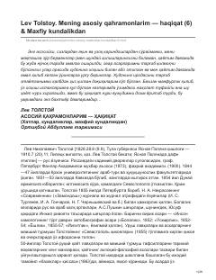

MKLev Tolstoyning shaxsiy hayoti va dunyoqarashini ochib beruvchi kundaliklar va xatlar to'plami.
Ushbu kitob buyuk rus yozuvchisi Lev Tolstoyning shaxsiy xatlari, kundaliklari va maxfiy qaydlaridan iborat to'plamdir. Unda adibning hayotiy qarashlari, diniy izlanishlari hamda ijodiy jarayonlari haqidagi samimiy fikrlari jamlangan.